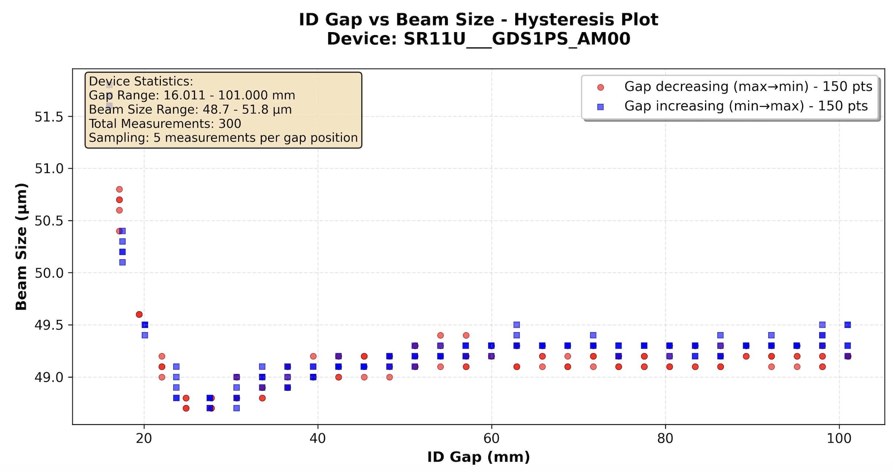

ALS Accelerator Assistant#
Research Publication
This system is described in detail in the research paper “Agentic artificial intelligence for multistage physics experiments at a large-scale user facility particle accelerator” published in Physical Review Research 8, L012017 (2026), which presents the first deployment of a language-model-driven agentic AI system executing multi-stage physics experiments on a production synchrotron light source.
🎓 Learn by Building
Want to build your own control system assistant? The Production Control Systems Tutorial provides a comprehensive walkthrough using a production-ready template based on this deployment. You’ll learn:
Channel finding with in-context and hierarchical pipelines
Service layer architecture patterns
Mock services for hardware-free development
Comprehensive benchmarking and CLI tools
Perfect for particle accelerators, and other large-scale scientific control systems.
Production Deployment in High-Stakes Scientific Environments#
The ALS Accelerator Assistant demonstrates production-grade patterns for deploying agentic AI in scientific facilities. Operating at the Advanced Light Source at Lawrence Berkeley National Laboratory, this system integrates with EPICS control systems managing 230,000+ process variables (PVs) and serving 40+ beamlines. It demonstrates safe operation in safety-critical environments where beam interruptions can impact dozens of concurrent experiments, providing practical patterns for integrating agentic AI into large-scale scientific facilities.
Particle accelerator facilities like the Advanced Light Source present unique challenges for AI deployment. The operational environment demands both high availability and strict safety constraints:
Operational Complexity:
Scale: Over 230,000 PVs across all accelerator subsystems require management
Distributed Expertise: Subsystem knowledge spans accelerator physics, RF systems, magnets, vacuum, diagnostics, and controls
Time Pressure: Troubleshooting unexpected faults lacks predefined solutions, forcing operators to identify relevant channels and assemble analysis under pressure
Multi-User Impact: Any beam interruption typically imposes downtime of at least 30 minutes, immediately affecting dozens of concurrent experiments across 40+ beamlines
System Response to Operational Challenges:
To address these demanding operational requirements, the ALS Accelerator Assistant implements a comprehensive suite of specialized capabilities that bridge the gap between natural language requests and executable scientific procedures. Unlike simpler tutorial examples like the Hello World Tutorial, this system demonstrates production-grade patterns at scale:
External Service Integration: Microservices architecture with MongoDB and specialized PV discovery services
Complex Data Orchestration: 7 interconnected capabilities managing real-time and historical scientific data
Sophisticated Context Management: Rich Pydantic models providing LLM-optimized access patterns and human-readable summaries for complex scientific data
PV Discovery & Access: Natural language queries to identify and retrieve accelerator control system addresses, a process that can otherwise demand significant experience, especially where naming conventions are complex or have evolved over time.
Historical Data Analysis: Statistical analysis of beam performance and operational trends
Operational Support: Diagnostic assistance and performance monitoring for accelerator systems
This production deployment demonstrates our proposed architecture for advanced agentic AI systems, validating that they can operate safely and effectively in demanding scientific facilities while maintaining the transparency and reliability required for production use.
🌐 Transferability to Other Scientific Facilities
Broader Applicability Beyond ALS
The ALS Accelerator Assistant demonstrates architectural patterns and design principles that extend well beyond the Advanced Light Source, providing a blueprint for agentic AI integration across diverse scientific infrastructures.
The majority of the system’s codebase is designed for direct deployment across different facilities with minimal modifications. The core framework capabilities, orchestration logic, data analysis workflows, and user interfaces require no facility-specific changes. The primary adaptation requirement centers on the PV Address Finder subsystem, which handles the translation between natural language queries and facility-specific control system addresses.
For synchrotron light source facilities, the system’s foundation on the MATLAB Middle Layer (MML) Accelerator Object provides the most direct transferability route for facilities already using MML:
Established Infrastructure: MML is implemented at most synchrotron light sources worldwide, providing a consistent data model
Direct Database Integration: The normalized PV database structure from MML can be adapted with minimal refinement for the PV Address Finder
Proven Patterns: The same PV discovery and resolution algorithms apply across different MML-enabled facilities
For facilities without the MATLAB Middle Layer available, several adaptation approaches can provide the required address organization and metadata. While “PV” terminology is EPICS-specific, the underlying address resolution patterns translate directly to other control systems (TANGO, DOOCS, etc.):
Consistent Naming Schemes: Facilities with well-structured control system naming conventions can bypass complex PV discovery through direct semantic matching
Other Middle Layer Frameworks: The MML-based approach is directly transferable to other accelerator middle layer implementations that provide similar address organization and metadata
Simple Dictionary Approach: Small control systems with just a few hundred PVs can use a straightforward dictionary mapping each address to descriptive sentences, with a simple search engine (e.g. RAG) built on top for natural language queries
Knowledge Graph-Based Organization: Large control systems can implement knowledge graphs to organize control system address structures, enabling sophisticated semantic queries and relationship discovery
Large-Scale Scientific Infrastructure Applications
The core architectural principles demonstrated here apply to other complex scientific facilities:
Multi-Domain Expertise: Any facility requiring coordination across specialized subsystems
Safety-Critical Operations: Environments where mistakes have high operational costs
Complex Control Systems: Facilities with large numbers of controllable parameters and monitoring points
Time-Critical Decision Making: Operations requiring rapid response to changing conditions
The Osprey Framework’s architecture ensures that these patterns can be implemented across diverse scientific domains while maintaining the transparency, safety, and reliability demonstrated at the ALS. In practice, deploying the ALS Assistant to a new facility primarily involves adapting the PV Address Finder’s data sources and query resolution logic—the vast majority of the system’s capabilities, user interfaces, and orchestration components should transfer directly without modification.
From Query to Scientific Insight#
The following example demonstrates a non-routine but practically important machine physics task—the type of complex procedure that typically requires custom scripting and deep subsystem knowledge, yet occurs too infrequently for dedicated solutions to exist.
Such procedures present several operational challenges:
Custom Scripting Required: Each experiment is unique, requiring bespoke code combining data retrieval, analysis, and machine control
Distributed Expertise: Operators often need to discuss with domain specialists for advanced procedures, creating bottlenecks
Time-Critical Preparation: Under operational pressure, assembling the necessary scripts, PV addresses, and analysis workflows can take hours
Safety Coordination: Machine interaction requires careful coordination with safety systems and approval workflows
Operator Request: Insertion Device (ID) Impact Study:
"Get the minimum and maximum value of all ID gap values in the last three days.
Then write a script which moves each ID from maximum to minimum gap and back
while measuring the vertical beam size at beamline 3.1. Sample the gap range
with 30 points, wait 5s after each new setpoint for the ID to settle and
measure the beam size 5 times at 5Hz. Return a hysteresis plot beam size vs gap."
Automated Framework Execution:
Time Range Parsing → Converts “last three days” to precise datetime range
PV Discovery → Resolves “ID gap” and “beam size” to specific EPICS channels via structured PV finder workflow (see detailed process below)
Archive Retrieval → Extracts historical gap ranges for all insertion devices from the ALS EPICS archiver appliance
Data Analysis → Creates Python script to analyze historical ranges and determine optimal measurement parameters
Machine Operation → Executes 30-point bidirectional gap sweep with synchronized measurements using analysis-derived parameters
Data Visualization → Produces professional, annotated hysteresis plots from collected measurement data
{kind=link}

Automated Physics Experiment Results: Hysteresis plots showing beam size variations across insertion device gap ranges, demonstrating the framework’s ability to orchestrate complex multi-stage physics experiments from natural language instructions.#
Result: Complete experimental procedure automated from natural language while maintaining operator-standard safety protocols. In this representative case, preparation time was reduced by two orders of magnitude compared to manual scripting, demonstrating the system’s ability to bridge the gap between complex user objectives and executable scientific procedures.
System Architecture#
The ALS Accelerator Assistant demonstrates a production-grade architecture for scientific facility integration:
System Architecture: Multiple users can access the same system simultaneously either remotely or from the control room via web interface (Open WebUI) or command line interface (CLI). The agent orchestrates connections to the PV database, archive data, and execution environments. Model inference uses either local Ollama or cloud providers via CBorg gateway, with EPICS integration ensuring safe hardware interaction.#
Key Architectural Components:
Multi-Interface Access: Web UI (Open WebUI) and command line for different user preferences
Hybrid Inference: Local GPU (H100) for low-latency + cloud models for advanced reasoning
Service Integration: PV database, archiver, and Jupyter execution environments
Safety Integration: EPICS-enforced operator-standard constraints for hardware interaction
Authentication: User identity management with personalized context and memory across sessions
PV Address Finder#
A critical challenge in accelerator control is translating natural language descriptions like “ID gap” or “beam current” into specific EPICS process variable names. The ALS Accelerator Assistant solves this through a structured PV Finder subsystem.
🔍 Deep Dive: Channel Finding Pipelines
The Production Control Systems Tutorial tutorial provides an in-depth exploration of two different channel finding pipeline architectures:
In-Context Pipeline: Semantic search for <1,000 channels (1-2s latency)
Hierarchical Pipeline: Structured navigation for >1,000 channels (5-7s latency)
Includes complete implementations, comparative benchmarking, and adaptation guides for your facility.
PV Address Finder Workflow: Natural language queries are split into atomic intents, preprocessed to extract systems and keywords, then resolved into specific EPICS PVs through a tool-bounded ReAct agent exploring a normalized MATLAB Middle Layer database.#
Technical Implementation:
Data Foundation: ~10,000 key PVs from normalized MATLAB Middle Layer (MML) export
Query Processing: Atomic intent splitting with system/keyword extraction
Bounded Exploration: ReAct-style agent with strictly limited API access for auditability
Transferability: MML foundation enables adaptation to other synchrotron facilities
This approach provides auditability through bounded tool access while grounding ambiguous terminology into precise EPICS channel names.
🔧 PV Finder MCP Service Integration (Optional)
What is MCP (Model Context Protocol)?
Model Context Protocol is an open standard for connecting Language Models with tool-calling capabilities with external data sources and tools. It enables AI applications like Claude Desktop, VS Code extensions, and other MCP-compatible clients to access specialized services through a standardized interface.
PV Finder as Standalone MCP Service
The ALS Assistant’s PV Finder service can be deployed as a standalone MCP server, making the specialized knowledge of ALS control systems available to any MCP-compatible application:
# === MCP SERVER WRAPPER ===
from mcp.server.fastmcp import FastMCP
from applications.als_assistant.services.pv_finder.agent import run_pv_finder_graph
# Initialize MCP server with service integration
mcp = FastMCP(
"[MCP] PV Finder",
lifespan=app_lifespan,
host=os.getenv("HOST", "localhost"),
port=int(os.getenv("PORT", "8051"))
)
@mcp.tool()
async def run_pv_finder(query: str) -> Dict[str, Any]:
"""
Send a query to the PV Finder Agent to handle queries about the ALS control system.
Use this tool when you need a PV address.
"""
try:
# Delegate to framework service layer
result = await run_pv_finder_graph(user_query=query)
# Normalize for MCP protocol
if hasattr(result, "model_dump"):
return result.model_dump()
return {"pvs": result.pvs, "description": result.description}
except Exception as e:
return {"pvs": [], "description": f"Error: {str(e)}"}
Key Benefits:
Ecosystem Integration: Use ALS PV knowledge in Claude Desktop, VS Code, and other MCP clients
Service Reusability: Same service logic serves both framework capabilities and external integrations
Independent Deployment: MCP server runs separately from main framework application
Claude Desktop Integration Example
The following figure demonstrates the PV Finder MCP server successfully integrated with Claude Desktop, where a user asks “what’s the beam current PV address?” and Claude Desktop correctly responds using the PV Finder tool:
PV Finder MCP server integration with Claude Desktop showing successful PV address lookup for beam current.#
Setting Up PV Finder MCP Service through the Framework’s Container Deployment System
The Osprey Framework includes integrated deployment for the PV Finder MCP service alongside other application services.
Add PV Finder MCP Service to Configuration: Include the service in your
config.yml:deployed_services: - applications.als_assistant.pv_finder # PV Finder MCP service # ... other services
Deploy Using Container Manager: Use the framework’s container deployment system:
# Deploy all configured services including PV Finder MCP python3 deployment/container_manager.py config.yml up -d
The container manager will automatically:
Render the PV Finder Docker Compose template with your configuration
Set up the MCP service with proper networking and dependencies
Configure transport protocols (stdio/SSE) based on environment settings
Start the service ready for MCP client connections
Service Integration: The deployed service becomes available for:
Claude Desktop Integration: Configure as MCP server in Claude Desktop settings
VS Code Extensions: Connect through MCP protocol for PV discovery in development environments
Custom Applications: Access via stdio or SSE transport protocols
Deployment Options:
Stdio Transport: Direct integration with MCP-compatible applications like Claude Desktop
SSE Transport: HTTP-based integration for web applications and remote clients
Containerized Deployment: Docker-based deployment managed by the framework’s container system
The MCP server implementation is located in services/applications/als_assistant/pv_finder/src/main.py and demonstrates how framework services can participate in the broader AI ecosystem while maintaining clean architectural boundaries.
🔍 Langfuse Observability Setup (Optional)
What is Langfuse?
Langfuse is an open-source platform designed for Language Model observability, providing comprehensive tracing and monitoring capabilities. It enables developers to debug, analyze, and optimize AI applications by capturing detailed execution traces, token usage, latencies, and model interactions.
Langfuse in the ALS Accelerator Assistant Framework
The PV Finder service integrates Langfuse to provide detailed observability into agent execution workflows, including:
PV Discovery Traces: Complete workflow visibility from natural language query to EPICS address resolution
Performance Monitoring: Track execution times, token usage, and system performance metrics
Debug Support: Detailed step-by-step execution traces for troubleshooting complex agent behaviors
Langfuse Dashboard Example: PV Finder service trace showing the complete workflow from natural language query to EPICS PV resolution, with detailed timing and execution context including all function calls, their arguments, and return values and model details.#
Setting Up Langfuse through the Framework’s Container Deployment System
The Osprey Framework includes a production-ready Langfuse deployment with enterprise features including ClickHouse for high-performance analytics, Redis for caching, and MinIO for object storage.
Add Langfuse to Configuration: Include the Langfuse service in your
config.yml:deployed_services: - applications.als_assistant.langfuse # Add this line # ... other services
Deploy Using Container Manager: Use the framework’s container deployment system (see detailed documentation in Container Deployment):
# Deploy all configured services including Langfuse python3 deployment/container_manager.py config.yml up -d
The container manager will automatically:
Render the Langfuse Docker Compose template with your configuration
Set up PostgreSQL, ClickHouse, Redis, and MinIO services
Configure networking between all services
Start Langfuse web interface on port 3001
Access Langfuse Dashboard: Open your browser and navigate to
http://localhost:3001Complete Initial Setup Flow: Follow the setup wizard:
Step 1: Create Organization
You’ll see: “Create an organization to get started”
Click “New Organization” and provide an organization name
Step 2: Invite Members (Optional)
Add team members or skip this step for now
You can always add members later
Step 3: Create Project
Enter a project name (e.g., “ALS Assistant”)
Projects group traces, datasets, and prompts
Click “Create”
Step 4: Generate API Keys
Click “Create API Key”
Important: Copy both keys immediately - the secret key is only shown once:
Secret Key:
sk-lf-42e6...(example)Public Key:
pk-lf-d6f9...(example)
Framework Configuration
Add the API keys to your .env file:
# Enable Langfuse observability
LANGFUSE_ENABLED=true
# API Keys from your Langfuse project settings (replace with your actual keys)
LANGFUSE_PUBLIC_KEY=pk-lf-d6f9...
LANGFUSE_SECRET_KEY=sk-lf-42e6...
Enterprise Deployment Features
The framework’s Langfuse deployment includes advanced features for production use:
ClickHouse Analytics: High-performance columnar database for fast trace queries and analytics
Redis Caching: In-memory caching for improved response times
MinIO Object Storage: S3-compatible storage for large trace data and media files
PostgreSQL: Primary database for metadata and configuration
Health Monitoring: Built-in health checks for all services
Enterprise License: Includes advanced features like RBAC and custom integrations
The Docker Compose template (services/applications/als_assistant/langfuse/docker-compose.yml.j2) orchestrates these services with proper networking, dependency management, and volume persistence.
The framework’s observability implementation in src/applications/als_assistant/utils/observability.py provides seamless integration with OpenTelemetry and automatic trace export to your Langfuse instance. Since Langfuse supports OpenTelemetry-based instrumentation, this observability setup can be used with any language model or provider that supports OpenTelemetry tracing.
Robust Python Code Execution: From Natural Language to Scientific Scripts#
The ALS Accelerator Assistant translates natural language objectives into reliable, executable code through a structured approach that prioritizes robustness over direct translation. Rather than attempting to directly convert user requests into code—which can be brittle and prone to over-design—the system employs a three-stage pipeline designed for reliability in production environments:
Python Execution Pipeline: Natural language tasks are translated into a plan, results schema, and then Python code, which can dynamically access the agent context, is statically analyzed, and may be reviewed by a human operator. Execution is typically confined to containerized Jupyter kernels with strict read/write policies, and every run produces session artifacts (context, notebooks, JSON) for full reproducibility.#
Three-Stage Code Generation Process:
This decomposition improves reliability by separating concerns and enabling validation at each stage:
High-Level Planning → Strategic plan of script objectives and approach
Schema Generation → Structured JSON schema specifying expected results and data formats
Code Production → Python code generated, conditioned on both plan and schema for consistency
Safety and Reliability Features:
Containerized Execution: Isolated Jupyter kernels with strict read/write policies prevent unintended system access
Dual Modes: Read-only (analysis/visualization) vs. write-enabled (machine interaction with mandatory approval)
Static Analysis: Code is analyzed before execution to identify potential issues
Human Review: Operators can inspect generated code before execution, particularly for write operations
Full Provenance: Every run produces structured artifacts (notebooks, JSON, figures) enabling complete reproducibility
Approval Workflows: Write operations require explicit operator approval, maintaining safety standards
Modular Architecture: Specialized capabilities (Data Analysis, Machine Operations, Visualization) share the same execution flow with domain-specific prompts
Framework Patterns Reference#
The ALS Accelerator Assistant demonstrates key production patterns for scaling the Osprey Framework to complex scientific applications:
Pattern: Consistent 4-step structure for all capabilities
@capability_node
class ExampleCapability(BaseCapability):
name = "capability_name"
provides = ["OUTPUT"]
requires = ["INPUT"]
async def execute(self) -> Dict[str, Any]:
# Step 1: Get required inputs (automatically extracted)
input_data, = self.get_required_contexts()
# Step 2: Process data (delegate to service layer if complex)
result = await self._process_data(input_data)
# Step 3: Create framework context object
output_context = OutputContext(data=result)
# Step 4: Store context and return state updates
return self.store_output_context(output_context)
Result: Consistent, testable, and maintainable capability implementation across all framework operations.
Pattern: Clean separation between framework orchestration and external system complexity
# === SERVICE LAYER ===
# Handles complex business logic, NLP, and database operations
async def run_pv_finder_graph(user_query: str) -> PVSearchResult:
"""Resolve natural language to specific EPICS PVs via Middle Layer database."""
# Complex NLP processing, database queries, semantic matching
return PVSearchResult(pvs=found_addresses, description=query_context)
# === FRAMEWORK CAPABILITY ===
# Focuses purely on framework orchestration and state management
@capability_node
class PVAddressFindingCapability(BaseCapability):
name = "pv_address_finding"
provides = ["PV_ADDRESSES"]
async def execute(self) -> Dict[str, Any]:
# Get task objective using helper method
search_query = self.get_task_objective()
# Delegate complex logic to service layer
response = await run_pv_finder_graph(user_query=search_query)
# Create framework context object
pv_finder_context = PVAddresses(
pvs=response.pvs,
description=response.description,
)
# Store context using helper method
return self.store_output_context(pv_finder_context)
Result: Independent testing, scaling, and maintenance of business logic vs. framework integration. This architecture also enables individual services to be deployed as standalone MCP servers for broader AI ecosystem integration (see PV Finder MCP Service Integration).
Pattern: LLM-optimized access patterns for complex scientific data structures
class ArchiverDataContext(CapabilityContext):
"""Historical time series from ALS EPICS archiver."""
timestamps: List[datetime] # Full datetime objects for analysis
precision_ms: int # Data precision in milliseconds
time_series_data: Dict[str, List[float]] # PV name -> time series values
available_pvs: List[str] # List of available PV names
def get_access_details(self, key: str) -> Dict[str, Any]:
"""Rich description of the archiver data structure."""
return {
"total_points": len(self.timestamps),
"precision_ms": self.precision_ms,
"pv_count": len(self.available_pvs),
"available_pvs": self.available_pvs,
"CRITICAL_ACCESS_PATTERNS": {
"get_pv_data": f"data = context.{self.CONTEXT_TYPE}.{key}.time_series_data['PV_NAME']",
"get_timestamps": f"timestamps = context.{self.CONTEXT_TYPE}.{key}.timestamps",
"get_single_value": f"value = context.{self.CONTEXT_TYPE}.{key}.time_series_data['PV_NAME'][index]"
},
"datetime_features": "Full datetime functionality: arithmetic, comparison, formatting with .strftime(), timezone operations"
}
Result: Enables complex physics analysis while providing clear, discoverable access patterns for AI agents.
Pattern: Human approval workflows for operations requiring oversight
@capability_node
class DataAnalysisCapability(BaseCapability):
"""Data analysis capability with human approval workflow."""
name = "data_analysis"
provides = ["ANALYSIS_RESULTS"]
async def execute(self) -> Dict[str, Any]:
python_service = registry.get_service("python_executor")
# ===== CHECK FOR APPROVAL RESUME =====
has_approval_resume, approved_payload = get_approval_resume_data(
self._state, create_approval_type("data_analysis")
)
if has_approval_resume:
# Resume execution with user's approval decision
resume_response = {"approved": bool(approved_payload)}
if approved_payload:
resume_response.update(approved_payload)
service_result = await python_service.ainvoke(
Command(resume=resume_response), config=service_config
)
approval_cleanup = clear_approval_state()
else:
# ===== NORMAL EXECUTION PATH =====
# Prepare execution request (details omitted for brevity)
execution_request = PythonExecutionRequest(
user_query=self._state.get("input_output", {}).get("user_query", ""),
task_objective=self.get_task_objective(),
capability_prompts=prompts, # Generated elsewhere
expected_results=expected_results, # Generated elsewhere
execution_folder_name="data_analysis",
capability_context_data=self._state.get('capability_context_data', {}),
config=self._kwargs.get("config", {})
)
# Execute with centralized approval handling
service_result = await handle_service_with_interrupts(
service=python_service,
request=execution_request,
config=service_config,
logger=logger,
capability_name="DataAnalysis"
)
approval_cleanup = None
# ===== BOTH PATHS CONVERGE HERE =====
analysis_context = _create_analysis_context(service_result)
context_updates = self.store_output_context(analysis_context)
# Clean up approval state if needed
if approval_cleanup:
return {**context_updates, **approval_cleanup}
return context_updates
Pattern: Integrating external databases as data source providers for enhanced context. This results in enhanced decision-making while maintaining clean separation between framework orchestration and database complexity.
Note
Demonstration Implementation: The current experimental database is a mock implementation designed to showcase the integration pattern. A comprehensive database with real ALS operational data is under development and will be added in future releases.
# === DATA SOURCE PROVIDER ===
# Implements the framework's DataSourceProvider interface
class ExperimentDatabaseProvider(DataSourceProvider):
"""Application-specific data source for experimental data and maintenance logs."""
async def retrieve_data(self, request: DataSourceRequest) -> Optional[DataSourceContext]:
"""Retrieve relevant database records for task context."""
# Query all equipment status and baseline measurements
equipment_status = self.db.query("equipment_status")
baseline_data = self.db.query("baseline_data")
if not (equipment_status or baseline_data):
return None
# Package data for LLM consumption
db_data = {
"equipment_status": equipment_status,
"baseline_data": baseline_data,
}
return DataSourceContext(
source_name=self.name,
context_type=self.context_type,
data=db_data,
metadata={
"equipment_count": len(equipment_status),
"baseline_count": len(baseline_data),
"source_description": "ALS experimental and maintenance database"
},
provider=self
)
def format_for_prompt(self, context: DataSourceContext) -> str:
"""Custom formatting optimized for LLM interpretation."""
if not context or not context.data:
return ""
sections = []
db_data = context.data
# Equipment status with visual indicators
if 'equipment_status' in db_data:
sections.append("**📊 Critical Equipment Status:**")
for eq in db_data['equipment_status']:
status_emoji = "✅" if eq['status'] == 'operational' else "⚠️"
sections.append(f" {status_emoji} {eq['device']}: {eq['status']}")
# Baseline data for comparative analysis
if 'baseline_data' in db_data:
sections.append("**📏 Baseline References:**")
for baseline in db_data['baseline_data']:
sections.append(f" • {baseline['parameter']}: {baseline['baseline_value']}")
return "\n".join(sections)
# === REGISTRATION ===
# Register provider with the framework's data source management system
experiment_db_provider = ExperimentDatabaseProvider()
Key Integration Benefits:
Contextual Task Guidance: Database records inform task extraction and execution planning
Baseline Comparisons: Historical data provides reference points for analysis and troubleshooting
Equipment Status Awareness: Real-time status information guides operational decisions
Extensible Architecture: Framework’s DataSourceProvider interface supports any database backend
Acknowledgments#
This work leveraged the CBorg AI platform and resources provided by the IT Division at Lawrence Berkeley National Laboratory. We gratefully acknowledge Andrew Schmeder for his consistent responsiveness and support, ensuring CBorg served as an invaluable resource for the development of this framework.
We are grateful to Alex Hexemer, Hiroshi Nishimura, Fernando Sannibale, and Tom Scarvie (LBNL) for stimulating discussions and continued support, and to Frank Mayet (DESY) for sharing insights from his pioneering GAIA prototype, which guided the early development of agentic AI at the ALS.
This work was supported by the Director of the Office of Science of the U.S. Department of Energy under Contract No. DE-AC02-05CH11231.